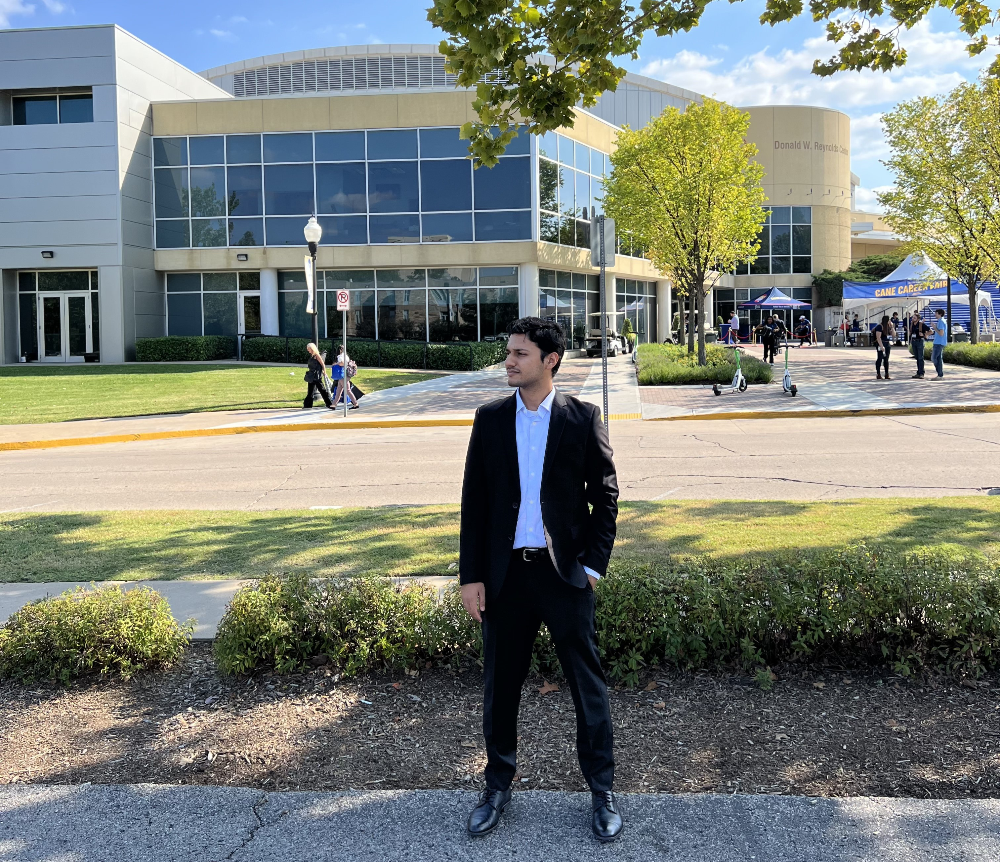

What I am doing now
I like research that survives contact with real constraints.
My strongest work lives at the point where experiments, baselines, and implementation quality all matter at the same time.
PhD Researcher | University of Tulsa | Machine Learning
Hello, I'm
I turn research questions into practical machine learning systems across NLP, recommender systems, computer vision, reinforcement learning, and security analytics.
What I am doing now
My strongest work lives at the point where experiments, baselines, and implementation quality all matter at the same time.
What I build
From attack-graph pipelines to LLM recommenders and robotics prototypes, I enjoy turning technical ideas into working systems with measurable outcomes.
How I work with people
Teaching programming, algorithms, and databases has made me sharper at communicating complex ideas with precision and patience.

Engineered from NVD and CVE datasets to reduce analysis time by 40%.
Sentence similarity, computer vision, RL navigation, and LLM recommendation systems.
About
I am a Computer Science PhD researcher who enjoys difficult technical problems, but I care most when the solution becomes clear, useful, and measurable. I want visitors to understand both what I do and how I think within a few seconds.
Research approach
My work usually begins with a question that needs clearer evidence: can a sentence similarity model perform better, can pose estimation hold up on a harder visual domain, or can agents cooperate more reliably?
Builder mindset
That could mean engineering attack graphs from vulnerability datasets, building an LLM-based recommender for thousands of users, or programming a robotic dog to navigate autonomously.
Teaching style
Supporting students across programming, algorithms, and databases has made explanation one of my strongest technical tools.
better sentence similarity accuracy
Improved over a baseline BERT model using Hugging Face Transformers.
mAP on sculpture pose estimation
Applied OpenCV and Detectron2 to 30+ ancient sculptures.
faster autonomous navigation
Programmed a robotic dog with RLlib to outperform scripted control.
100+
attack graphs engineered from NVD and CVE datasets
2,000
users supported by an LLM-based recommender system
30+
ancient sculptures analyzed with computer vision
4
undergraduate courses taught and supported
Selected Work
These projects reflect the kind of work I want to keep doing: technically ambitious, outcome-focused, and grounded in real implementation.
Built a workflow for engineering attack graphs from NVD and CVE datasets so security analysis could move faster and with less manual effort.
Designed and implemented a recommendation system for 2,000 users that improved diversity while keeping the experience useful and easier to trust.
Applied OpenCV and Detectron2 methods to estimate pose across a collection of ancient sculptures and deliver strong precision on a difficult visual task.
Programmed a robotic dog with RLlib to navigate a 100 sq. ft. obstacle course autonomously and outperform scripted control.
Experience
July 2025 - Present
University of Tulsa
Investigating sentence similarity with transformers, generating attack graphs from vulnerability datasets, exploring pose estimation for ancient sculptures, and building reinforcement learning systems for autonomous navigation.
Sep. 2024 - May 2025
University of Tulsa
Designed an LLM-based recommender system for 2,000 users and modeled cooperation in multi-agent systems through reinforcement learning.
Sep. 2023 - Present
University of Tulsa
Taught and supported undergraduate courses in programming, algorithms, and database systems while preparing labs, lectures, homework, and exams.
June - Aug. 2021
University of Engineering and Technology, Lahore
Built a real-time fault detection and monitoring prototype for power systems with less than one second reporting latency and 95% fault identification accuracy.
Skills
Education
Expected 2028
University of Tulsa, Tulsa, OK
June 2021
University of Engineering and Technology, Lahore
Best Final Year Project | PEEF Scholarship
Leadership
2025
University of Tulsa
Represented the Computer Science department and served on the Public Relations Committee.
2025
University of Tulsa
Managed funding, tracked competition income, and worked with the department to identify new support opportunities.